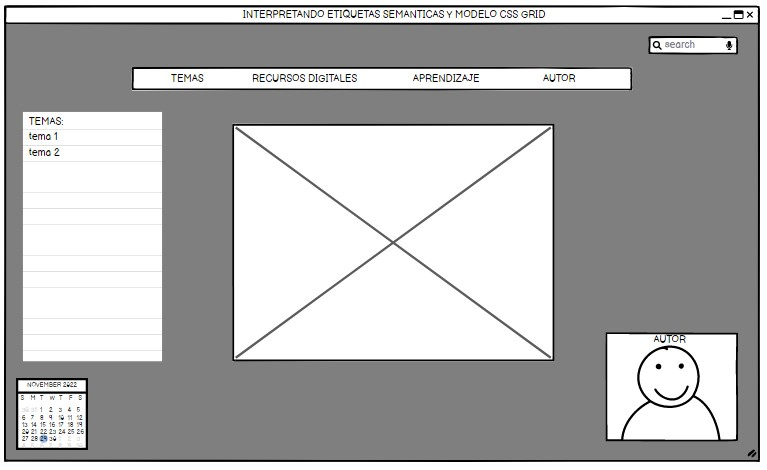

Este sitio está diseñado con el fin de mostrar el uso de las etiquetas semánticas y el método CSS GRID y su
aplicación en un sitio web
Tema 1: Etiquetas semánticas
¿Qué son las etiquetas semánticas?
Son las que sirven para definir el esquema principal del documento, como HEADER, ARTICLE, FOOTER, etc. Todas
esas etiquetas semánticas nos indican qué es el contenido que engloban y cuál es su relación con el conjunto
de elementos del documento HTML
¿Para qué sirven las etiquetas semánticas?
El estilo semántico sirve para dar significado o información extra que otorgan los elementos o etiquetas del
lenguaje, información que define o describe el contenido, función o sección que contienen, haciendo que el
código se programación sea facilmente comprensible y dando órden.
Elementos semánticos
Tema 2: Método CSS GRID
¿Qué son las CSS GRID?
En el desarrollo web utilizamos el grid para diseñar la estructura de la web así como el contenido de la
página. El grid es una cuadrícula sobre la que se distribuyen los distintos elementos que componen la web.
¿Para qué sirven las CSS GRID?
En este sistema se trabaja con filas y columnas para crear una cuadrícula, en la cual se colocan y
distribuyen los distintos elementos. El usuario es quien decide el tamaño de las filas y las columnas,
añadiendo las preferencias al contenedor.
Mockup

Bibliografía o recursos digitales:
Celaya Luna, A. (2014). Creación de páginas web: HTML5. p. 1 - 60.
https://elibro-net.bibliotecavirtual.unad.edu.co/es/ereader/unad/56045
Granollers i Saltiveri, T. G. (2012). Diseño de sistemas interactivos centrados en el usuario. Editorial
UOC. p. 211 - 264. https://elibro-net.bibliotecavirtual.unad.edu.co/es/ereader/unad/56326?page=94
Ochoa Torres, J. (2018). O.V.I. SCV - Sistema Controlador de Versiones. [Video].
http://hdl.handle.net/10596/22592